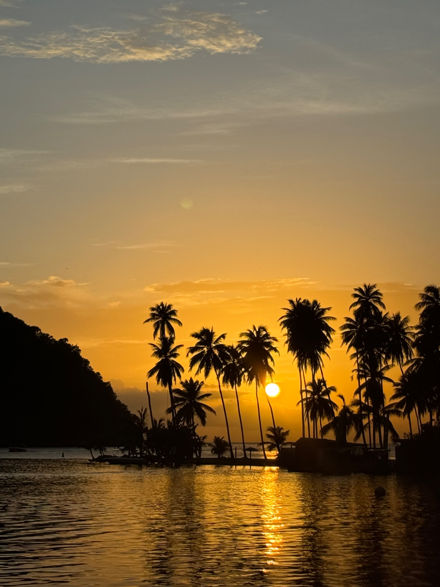

Ireland
Historic architecture, green landscapes, and a slower pace that still feels worth travelling for.
International travel
International travel usually adds more contrast, whether that comes from architecture, language, food, or just distance from everyday routine.
Historic architecture, green landscapes, and a slower pace that still feels worth travelling for.

Warm weather, slower days, and a more resort-based trip style built around views and recovery.